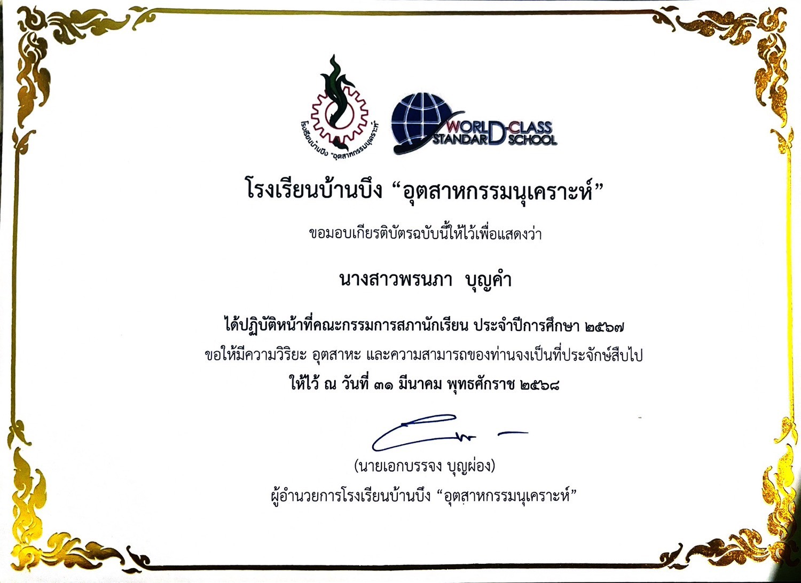
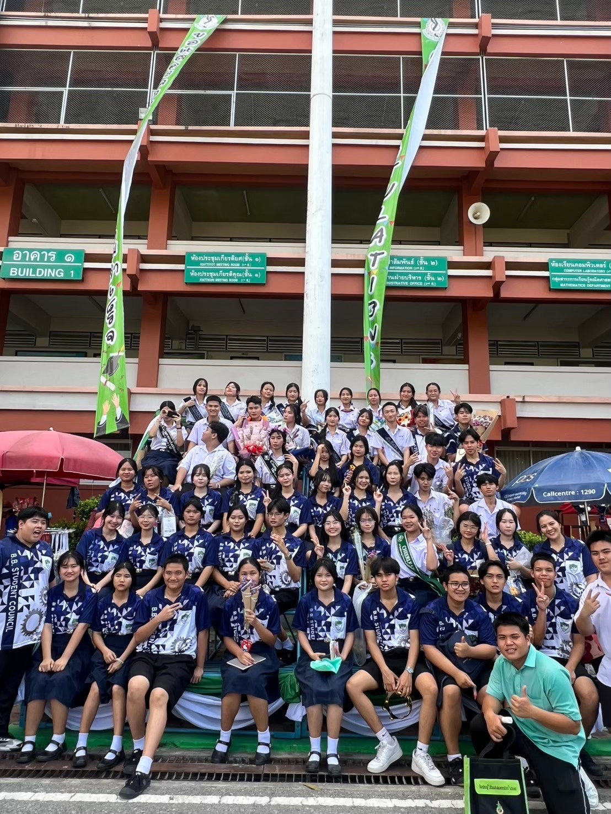
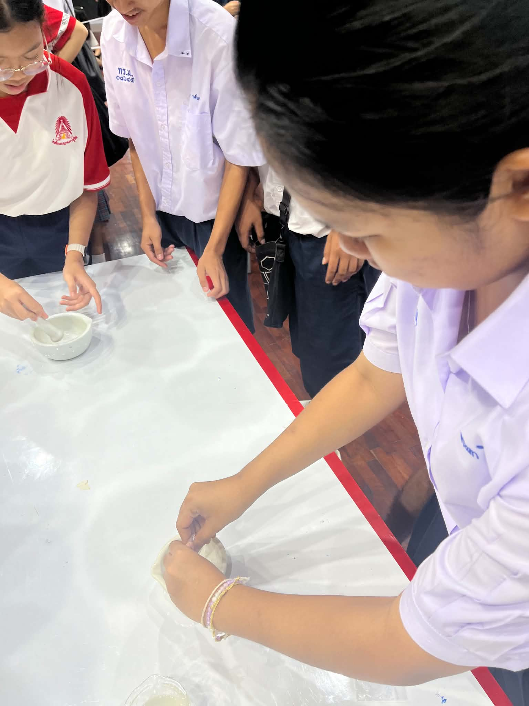
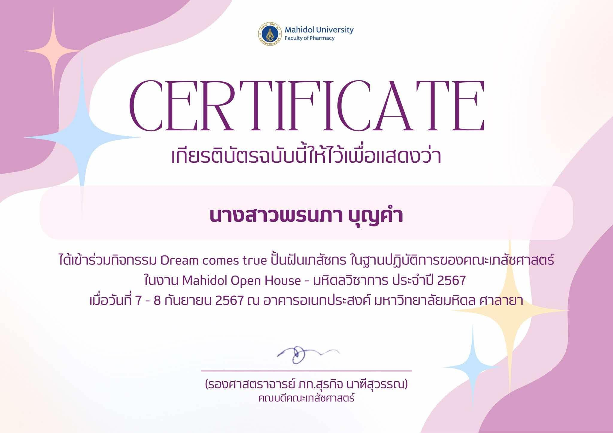
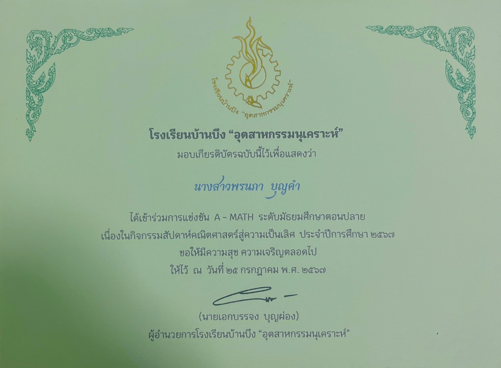
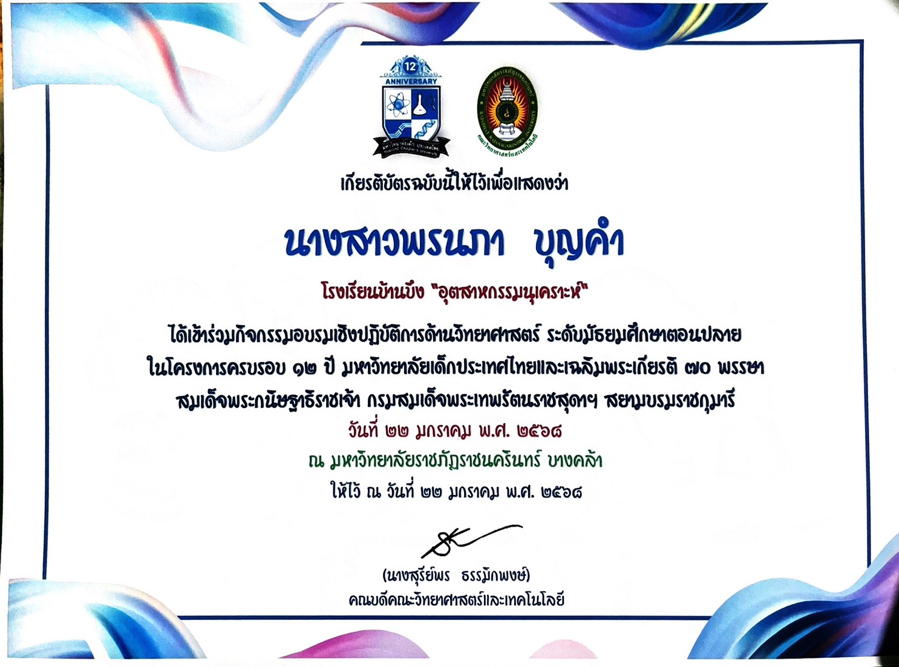
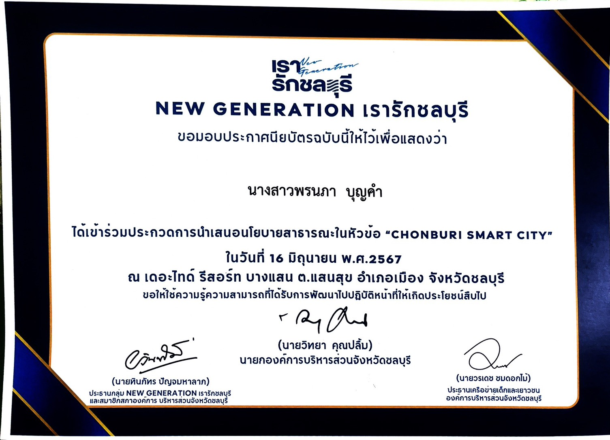

WORKS (เกียรติบัตรและผลงาน)


ผลงานชิ้นที่ 1 : คณะกรรมการสภานักเรียน โรงเรียนบ้านบึง "อุตสาหกรรมนุเคราะห์"
สิ่งที่ได้รับ : ได้พัฒนาทักษะความเป็นผู้นำ การทำงานเป็นทีม จิตสาธารณะ และการสื่อสารกับผู้คนหลากหลายกลุ่ม ซึ่งเป็นทักษะทางสังคม (Soft Skills) ที่สำคัญในการสื่อสารความรู้ด้านสุขภาพแก่ผู้ป่วยและการปฏิบัติงานในวิชาชีพเภสัชกรรมที่ต้องพบปะผู้คนตลอดเวลา


ผลงานชิ้นที่ 2 : เข้าร่วมกิจกรรม Dream comes true ปั้นฝันเภสัชกร ในฐานปฏิบัติการของคณะเภสัชศาสตร์ ในงาน Mahidol Open House - มหิดลวิชาการ ประจำปี 2567
สิ่งที่ได้รับ : ได้รับความรู้และประสบการณ์จากการเข้าร่วมกิจกรรมปฏิบัติการทางเภสัชศาสตร์ พร้อมทั้ง เกียรติบัตรรับรองการเข้าร่วมกิจกรรม จากคณะเภสัชศาสตร์ มหาวิทยาลัยมหิดล ซึ่งสามารถนำไปใช้เป็นหลักฐานและ Portfolio เพื่อแสดงถึงความสนใจ ความมุ่งมั่น และการค้นหาตัวตนใน Field ของ Healthcare หรือคณะเภสัชศาสตร์ได้เป็นอย่างดี
ผลงานชิ้นที่ 3 : การฝึกปฏิบัติงานกลุ่มงานการพยาบาล โรงพยาบาลบ้านบึง
สิ่งที่ได้รับ : ได้เรียนรู้ระบบการทำงานจริงในโรงพยาบาล การดูแลผู้ป่วย และการทำงานร่วมกับสหสาขาวิชาชีพในระบบสาธารณสุข ช่วยให้เข้าใจบริบทหน้างานจริงและการสื่อสารเพื่อความปลอดภัยของผู้ป่วย (Patient Safety)

ผลงานชิ้นที่ 4 : การแข่งขัน A-MATH สัปดาห์คณิตศาสตร์สู่ความเป็นเลิศ
สิ่งที่ได้รับ : ได้ฝึกกระบวนการคิดคำนวณ การแก้ปัญหาภายใต้เงื่อนไขเวลา และการคิดเชิงตรรกะ ซึ่งมีความสำคัญอย่างยิ่งต่อการคำนวณขนาดยาและการวิเคราะห์ข้อมูลทางเภสัชสถิติอย่างแม่นยำ

ผลงานชิ้นที่ 5 : กิจกรรมอบรมเชิงปฏิบัติการด้านวิทยาศาสตร์ ระดับมัธยมศึกษาตอนปลาย มหาวิทยาลัยเด็กประเทศไทย
สิ่งที่ได้รับ : ได้ฝึกทักษะกระบวนการทางวิทยาศาสตร์ การทดลอง และการใช้เครื่องมือปฏิบัติการ ซึ่งเป็นรากฐานสำคัญของงานวิจัย การพัฒนาตำรับยา และกระบวนการสังเคราะห์สารเคมีหรือผลิตภัณฑ์สุขภาพ

ผลงานชิ้นที่ 6 : ประกวดนำเสนอนโยบายสาธารณะ "CHONBURI SMART CITY"
สิ่งที่ได้รับ : ได้พัฒนาทักษะการคิดเชิงวิเคราะห์และการวางแผนเชิงระบบ (System Thinking) ซึ่งจำเป็นต่อการมองภาพรวมด้านระบบสาธารณสุข การบริหารจัดการนโยบายสุขภาพ และการขับเคลื่อนนวัตกรรมเพื่อคุณภาพชีวิตที่ดีของประชาชนในอนาคต